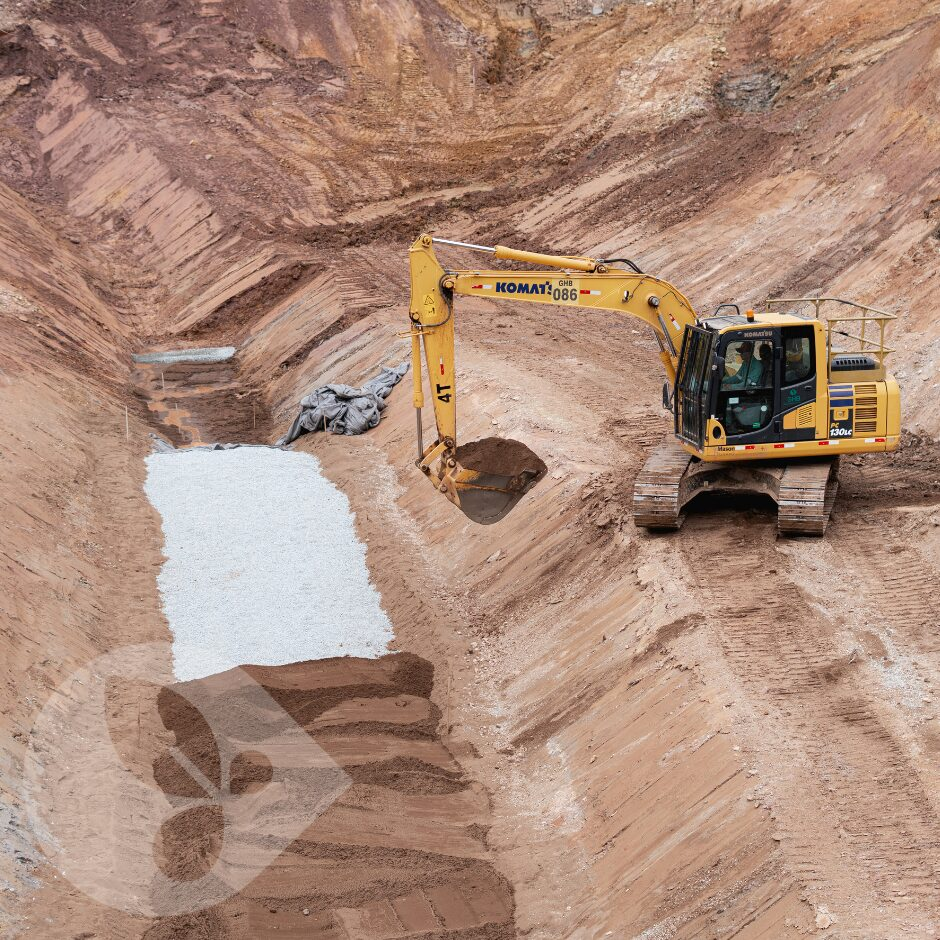

Dreno & drenagem
Drenagem superficial e profunda e contenção estrutural para controle hídrico de taludes, faixas de domínio e áreas industriais.
Solicitar orçamento deste serviço
Descrição técnica & aplicações
Onde e como aplicamos
Projetos e execução de sistemas de drenagem e contenção que controlam o escoamento superficial, reduzem a energia da água e evitam processos erosivos e instabilidades geotécnicas.
- Controle hídrico de taludes de corte e aterro
- Faixas de domínio rodoviárias e ferroviárias
- Áreas de mineração e pátios industriais
- Dissipação de energia em descidas d’água
Muros de gabião
Estruturas flexíveis e drenantes em pedra e malha metálica.
Rip-rap
Enrocamento de proteção para margens e saídas de drenagem.
Biorretentores de sedimentos
Retenção de sedimentos com materiais biodegradáveis.
Soluções e técnicas utilizadas
| Solução técnica | Foco de aplicação | Diferencial GHB |
|---|---|---|
| Gabiões | Contenção de taludes e margens | Estrutura drenante e flexível |
| Rip-rap | Margens e dissipadores | Alta resistência hidráulica |
| Canaletas e descidas d’água | Taludes e bermas | Controle preciso do escoamento |
| Biorretentores | Controle de sedimentos | Solução biodegradável |
Benefícios técnicos
✓
Controle de erosões e assoreamento
✓
Aumento da vida útil das estruturas
✓
Conformidade com licenças ambientais
✓
Execução com frota própria
Obras relacionadas
Ver todasCases com dreno & drenagem
Vamos dimensionar a solução para o seu edital?
Envie o termo de referência e receba uma proposta técnica qualificada.
Solicitar proposta técnica